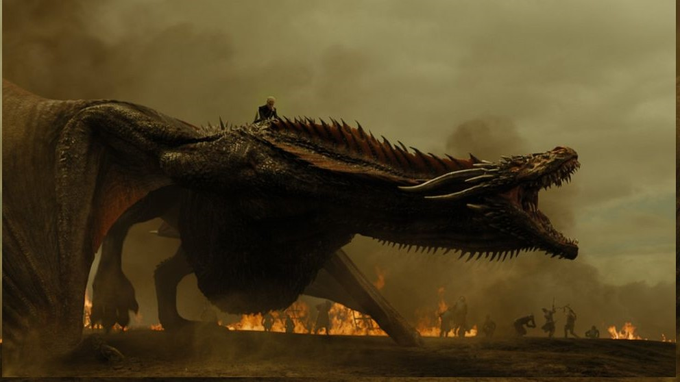
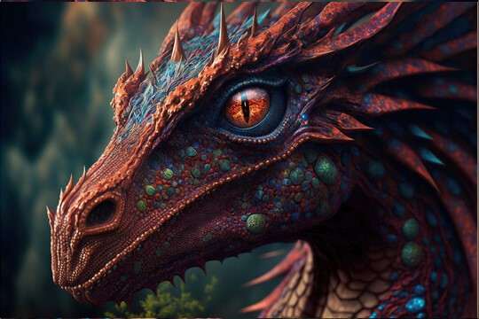

- Legends of the Dragons -
The Legends of Dragons - In the age of myths and magic, dragons soared through the skies, their majestic forms casting shadows over mountains and valleys. These ancient beings were more than mere creatures; they were the embodiment of elemental forces, guardians of the earth, and keepers of wisdom.
- The Fireclaws -
The Fireclaws: Residing in the heart of volcanic mountains, the Fireclaws were fierce and passionate. Their scales glimmered like molten lava, and their breath could turn forests to ash. Known for their temper and bravery, they fiercely protected their territory from any who dared intrude.
- The Frostwings -
Dwelling in the icy realms of the north, the Frostwings were known for their shimmering blue scales and icy breath. They were gentle giants, often seen gliding gracefully through the snow-laden skies, embodying the serene yet fierce beauty of winter.
- Stormbringers -
The Stormbringers: With scales that crackled like thunder and eyes that flashed with lightning, the Stormbringers were the tempest of the skies. They commanded the storms, and their presence heralded fierce winds and torrential rains, making them both feared and revered.
